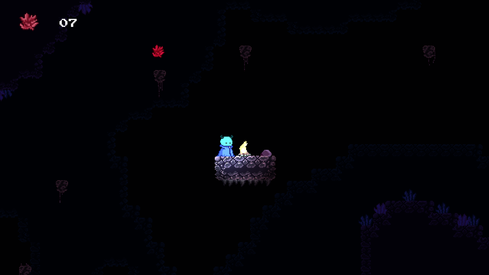
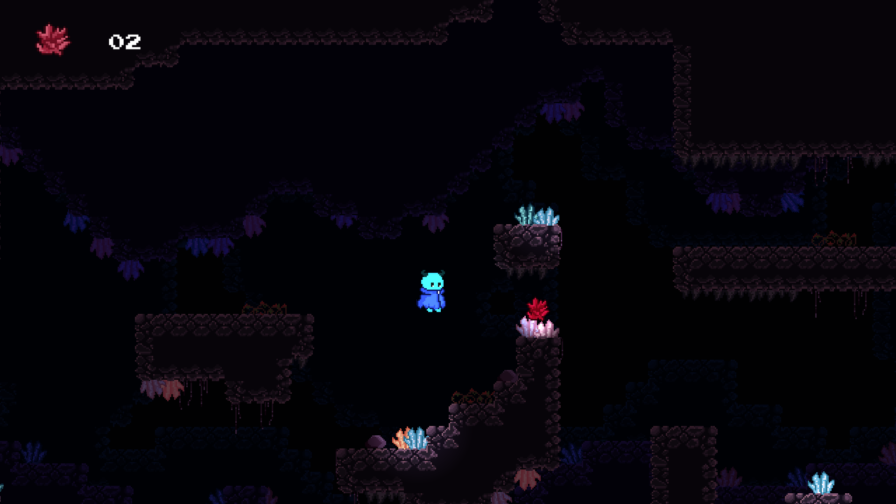
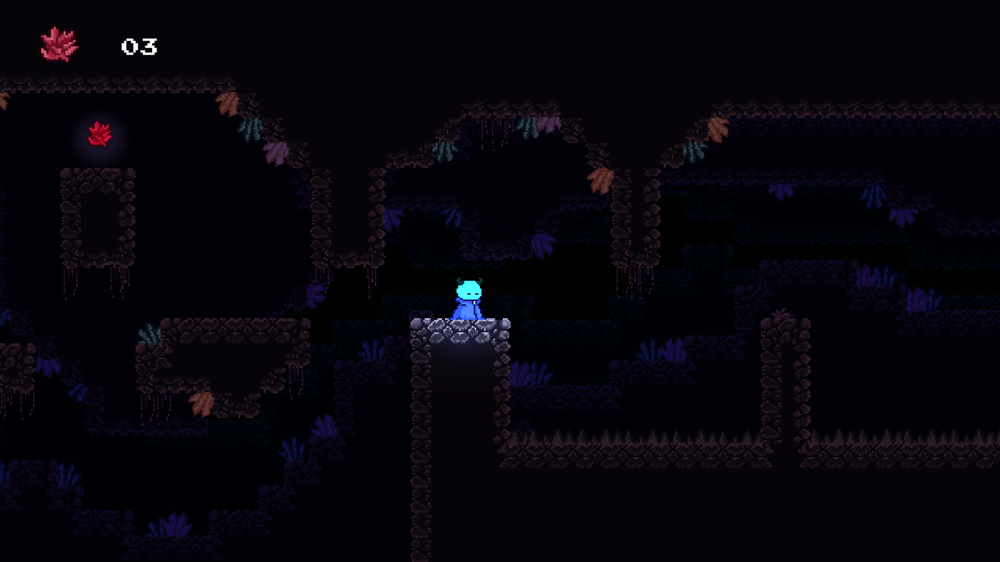

SPIRITS
An atmospheric pixel jump 'n' run about a stranded spirit and the bond that saves it.

About the game
While searching for crystals, deep in a cave, an unexpected discovery awaits: a spirit, stranded and trapped, seemingly struggling for release. The heart quickens with every step closer, bracing for whatever surprises might be lurking.
"Then the eyes meet, and in that moment a bond forms that can't easily be broken."
It's clear right away: this little creature needs help. That's how the journey with Bones begins, a tiny, glowing creature with a weakness for rare crystals. Together, the two make their way through the cave, past its dangers, always in search of the most precious crystals they can find. SPIRITS is my very first game, a 2D pixel jump 'n' run, made during my first semester.


The story behind it
I made SPIRITS during my very first semester, as my very first game ever. Back then, I barely knew how much actually goes into developing a game, and that turned out to be the biggest lesson of all. At the start, you think a small jump 'n' run can't possibly be that complicated, and then, step by step, you realize just how many decisions, problems, and details are actually involved.

With SPIRITS, I took my very first real steps in programming. I learned how to work in Unity, how to actually turn ideas into something playable, and along the way discovered how much I love level design. Just as important was everything that happened around the project itself: through it, I found friends I've been working with ever since, people who share just as much passion for games as I do.
SPIRITS isn't just my first finished game to me. It's also the starting point of everything that came after.